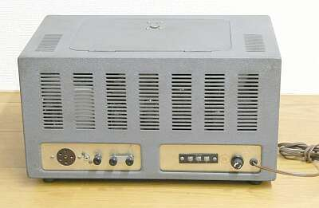
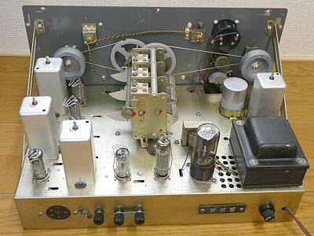
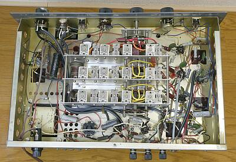
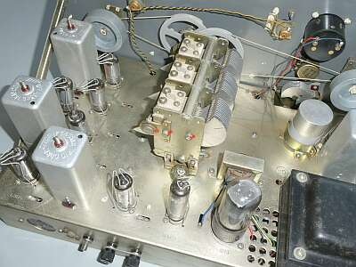
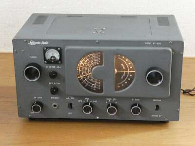
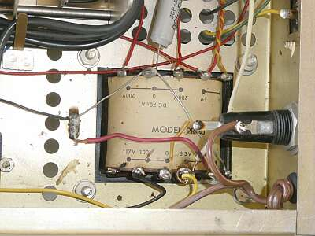

 |
リア側です
ケースは、天板と背面の穴あけ具合が違いまますが、９Ｒ-４と同じものに見えます
左がANT端子、右がＳＰ端子です
ＡＦトランス内蔵で、４～８Ωのスピーカーが接続できます |
 |
ケースから取り出した中身です
背面から
年代からしては、とてもきれいというか保存状況は良い状態です
|
 |
シャーシ下面です |
予想通り、湿気の多い日本での保存より湿気の少ないＵＳでのほうが、ケースなどの劣化は明らかに少ないです
見た目は非常にきれいです
ただ元がキットですから、作った方の力量で仕上がりは異なります・・・ |
 |
整流管以外、すべてＭＴ管です
ＡＦトランスも内蔵されました
整流管の奥に見えているものがそのOUTPUTトランスです
ダイヤル照明が各扇ダイヤルにひとつ用意されました
こちらのブッシングは、まだ持ちそうです
ＢＦＯピッチコントロールＶＣが、メーターゼロ点調整ＶＲの下に見えています |
 |
ダイヤル照明は、こんな感じです
やはりメーターには照明がありません |
 |
９Ｒ-４Ｊの証？
電源トランスには MODEL ９R４J と書かれています
元々１１７Vに配線してあったものを１００Vに移行しました
取り付いていなかった（劣化して外れたと思われる）ブッシングも取り付けました |
トラブル
生誕６０年オーバーですから、当然色々あります
まず部品の劣化・・・これは原因が湿度だけではなさそうで、そのものの特性のようです
同じころの製品 ９Ｒ-４ こちらでも問題になった ０．０４７μFのオイルコンデンサがやはりＮＧでした
他に、０．０１μFのものも・・・こちらは、目の前で破裂しました！
０．０４７μFは,ＡＧＣラインに入っていたもの
絶縁が悪くなって、ＡＧＣ電圧を分圧するようなことに
ＡＦラインに入っていたものは、ＡＦアンプの動作に問題を起こしていました
破裂は、ＡＣラインに入っていたもの
ゴムブッシング
ＰＬ用は何とか持ちそうですが、ＡＣケーブル側は無くなっていたので、一度ケーブルを抜いて取り付けました
半田付けの怪しい配線は修正しました（時々、真空管ヒーターが点灯しないケースもあった） |